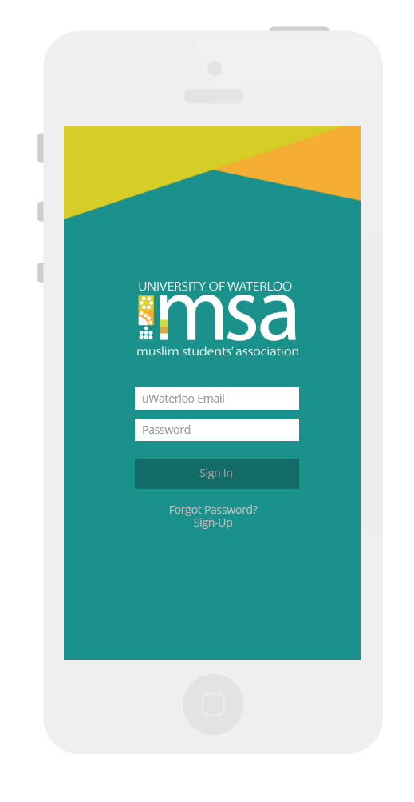

iOS UI design for a campus club mobile app at the University of Waterloo. This app allows club members and/or the general University of Waterloo crowd to access information on upcoming MSA club events, purchase tickets for the events, and receive other daily reminders.
Prototype
Click around to navigate the prototype below.
The Design
Below is a rough use case flow of the login screen, the forget password screen, news feed, and an overview of an event feed. Originally I had planned for the news feed to only be able to filter posts using the button tabs just below the navigation bar. As it was decided that more features will eventually be added (eg. a calendar, restaurant finder, prayer information), I decided to include a separate App bar on the bottom that caters to these additional features.
Result
In the final product, I wanted to give it a minimilist, clean finish and have the sea-green as the main part of the colour palette while keeping the orange and green from the logo to a minimum. I seriously had to resist the urge to use all three colours from the MSA logo anytime I got the chance to. And there you have it!
Login screen
News Feed
Event Details